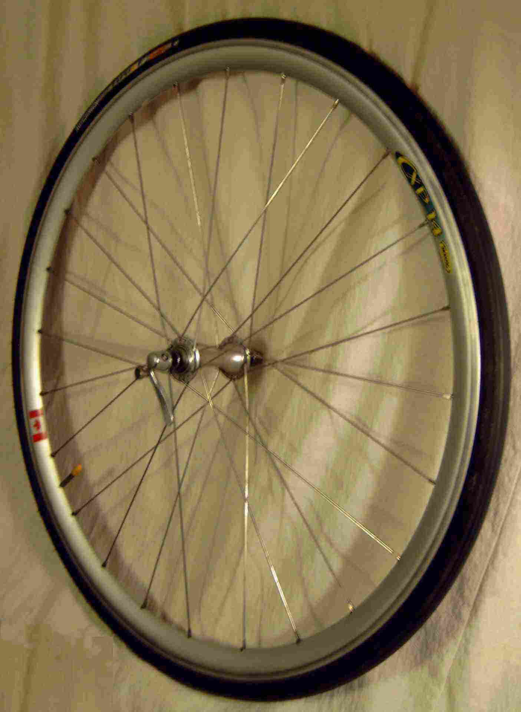
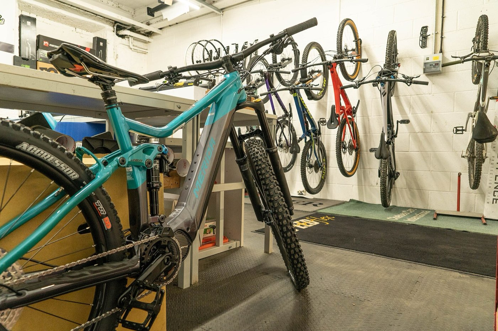
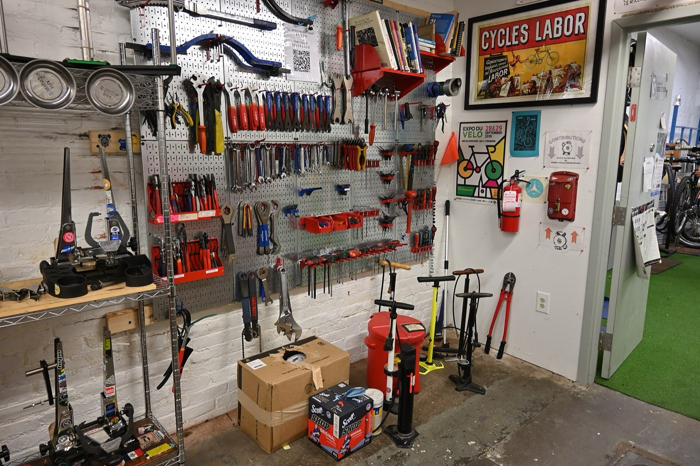
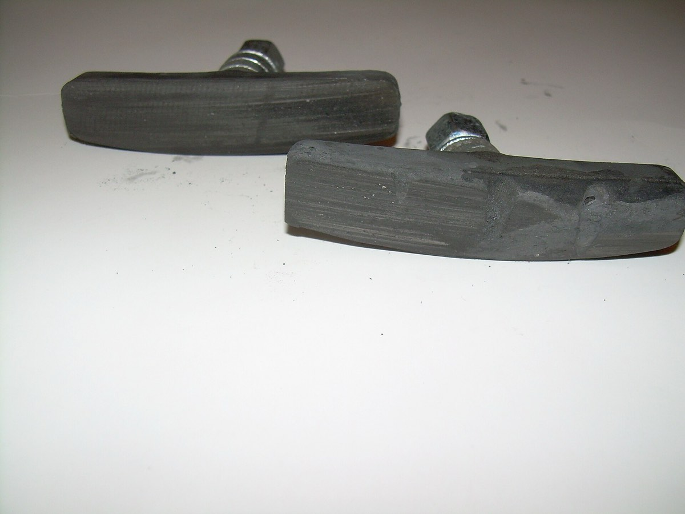
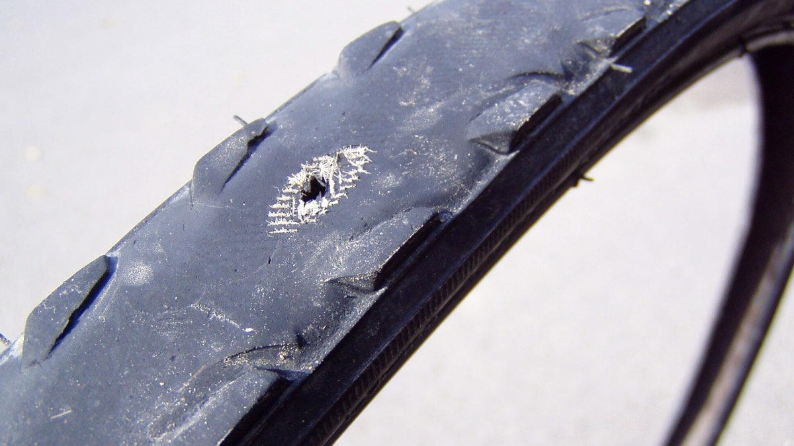
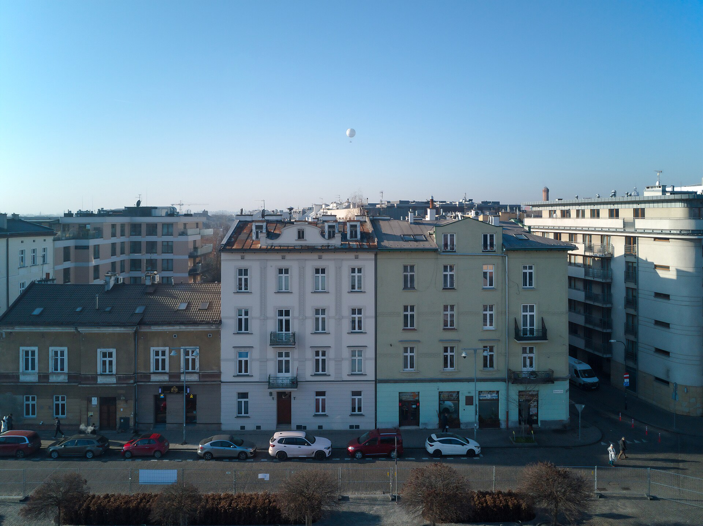
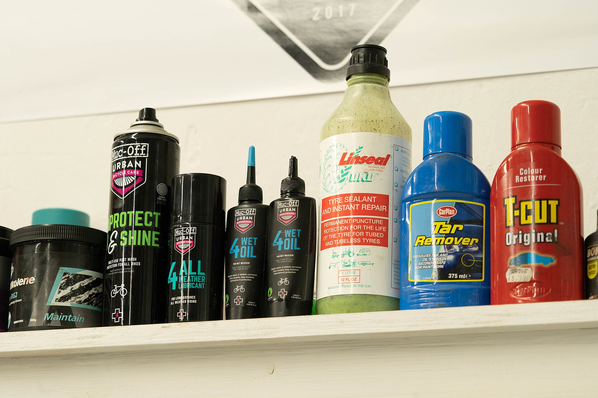

- Typowa usterka
- Co robimy
- Zwykle trwa
zwykle

odbierz po 17.Warsztat rowerowy przy Józefińskiej 17 na Podgórzu. Cenę znasz, zanim odkręcimy pierwszą śrubę.
Pn–pt 8:00–18:00, sobota 9:00–14:00

6rowerów dziś na stojakach
3wolne miejsca na jutro rano
1 dzieńzwykła naprawa, przegląd dwa
0 złpompowanie kół przy ladzie

Usługi
| Przegląd | Pełny, z myciem napęduśruby dokręcane kluczem 5 Nm | 180 zł |
| Przegląd | Podstawowy: hamulce, przerzutki, koła | 110 zł |
| Hamulce | Regulacja, jedna oś | 35 zł |
| Hamulce | Odpowietrzenie hydraulikiolej mineralny lub DOT | 90 zł |
| Przerzutki | Regulacja przód i tył1×, 2×, 3× · 7–12 rz. | 60 zł |
| Napęd | Wymiana łańcuchazużycie powyżej 0,75% | 40 zł + łańcuch |
| Koło | Centrowaniebicie do 0,3 mm | 50 zł |
| Koło | Wymiana dętki28″ · 700×35C · 26″ · 20″ | 30 zł + dętka |
| Koło | Wymiana szprychy | 25 zł za sztukę |
| Inne | Montaż bagażnika lub błotników | 45 zł |
| Inne | Przechowanie roweru zimą, miesiąc | 60 zł |
zwykle
Rowery, które naprawiamy najczęściej, i to, co zwykle w nich wymieniamy. Strzałkami ← → przełączasz modele.
Rano, od 8:00. Bez umawiania, wystarczy przywieszka z telefonu albo dwa słowa przy ladzie.
Do 11:00 dzwonimy, jeśli znajdziemy coś poza przywieszką. Bez Twojej zgody nic nie dopisujemy.
Zużyte części oddajemy w woreczku, żebyś widział, co wymieniliśmy.
Rower stoi przy drzwiach, umyty napęd, opony napompowane. Pełny przegląd: następnego dnia.


W cenie: regulacja hamulców i przerzutek, centrowanie kół, mycie i smarowanie napędu, dokręcenie wszystkiego, co się luzuje. Części liczymy osobno i zawsze pytamy.
GdzieJózefińska 17, Podgórze
Od kiedyOd 2014 roku
Jak dojechaćTramwaj do Korony albo rowerem przez kładkę Bernatka
Marta i Kuba Zając otworzyli Szprychę w dawnej pracowni szewskiej, bo nikt w okolicy nie naprawiał roweru w jeden dzień. Dziś są tu trzy stojaki i ściana kluczy.
Naprawiamy wszystko, co ma dwa koła: miejskie damki, szosy, rowery cargo i dziecięce biegówki. Elektryków nie bierzemy, za to chętnie doradzimy, gdzie je oddać.


Coś stuka albo piszczy? Zadzwoń, zwykle wiemy, co to, po pierwszym zdaniu.
Kraków, ul. Józefińska 17. Pn–pt 8:00–18:00, sobota 9:00–14:00. Na e-maile odpisujemy tego samego dnia.